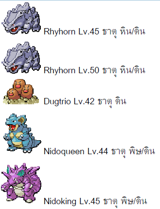
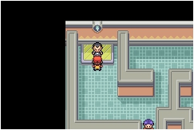
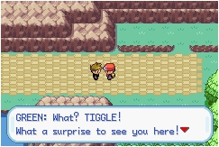
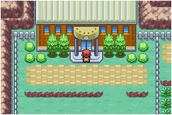

บทที่ 26 / 29
โทคิวะซิตี้<Viridian City>(2)
❖
เข้าไปในยิมสุดท้ายได้เลย หัวหน้ายิมนี้ก็คือซากากิ<Giovanni>นั่นเอง โปเกมอนที่ใช้จะเป็นรูปแบบพิษและดิน ดังนั้นเราควรจะใช้ โปเกมอนน้ำ น้ำแข็ง หรือบิน(ใช้เทคนิคเล็กน้อย)

เมื่อชนะเราจะได้ Earthbadge ที่ทำให้เราควบคุมโปเกมอนได้ทุกเลเวล พร้อมตังค์5000เยน และ TM26 Earthquake


ทีนี้เราก็เข้าแข่งโปเกมอนลีคได้แล้ว โดยให้ขนตัวที่มีHM03และ04ไปด้วย เดินทางทิศตะวันตกของเมือง จะได้สู้กับคู่แข่งอีกครั้ง เลเวลก็เพิ่มพอสมควร อยู่ระหว่างเลเวล45-53ทีเดียว แถมยังมีโปเกมอนครบ6ตัวแล้ว


จากนั้นเข้าไปในอาคาร แล้วขึ้นไปทางเหนือเรื่อยๆผ่านถนนหมายเลข23 ซึ่งระหว่างทางจะมียามคอยตรวจเข็มกลัดเทรนเนอร์ของเรา แล้วเราจะมาถึงแชมเปี้ยนโรด